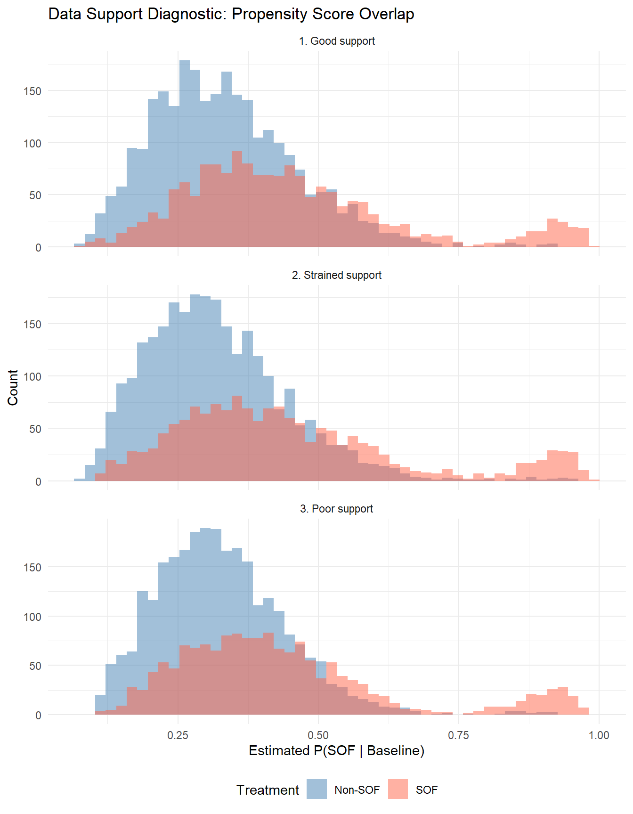
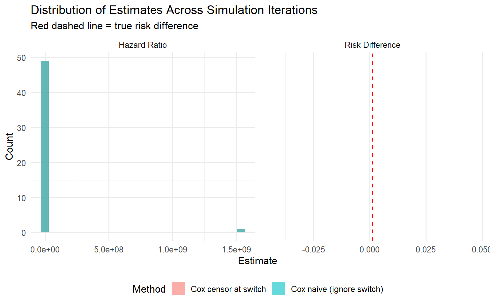

library(tidyverse)
library(survival)
library(here)
library(knitr)Estimands in Time-to-Event Real-World Safety Analyses
When conventional regression misses the target
Estimands in Time-to-Event Real-World Safety Analyses
In real-world safety studies, the question “Does this drug increase the risk of adverse events?” sounds simple. But the answer depends critically on how you handle intercurrent events—treatment switching, discontinuation, death from other causes—that occur between treatment initiation and the outcome. The ICH E9(R1) addendum requires that each intercurrent event be addressed through a prespecified estimand strategy, and the strategy defines what the analysis is actually estimating.
The central problem this chapter addresses is not which estimand to choose. Rather, it is that conventional regression analyses often fail to target the stated estimand when intercurrent events are present. A naive Cox model that ignores switching, or one that censors at switching, may appear to estimate a treatment effect, but the quantity it targets can be misaligned with the scientific question. Longitudinal targeted learning via lmtp offers a principled alternative that directly targets the intervention-defined estimand and adjusts for time-varying confounding.
Goals:
- Define estimands under intercurrent events using the ICH E9(R1) framework
- Show how conventional Cox regression analyses can fail to target these estimands
- Show how
lmtp-based longitudinal targeted learning can better estimate them under the assumed longitudinal data structure - Diagnose when empirical support for a target intervention or estimand is inadequate
source(here("DGP.R"))
source(here("R", "helpers.R"))
#> Warning: package 'data.table' was built under R version 4.4.3
source(here("R", "support_diagnostics.R"))The Regulatory Context
The ICH E9(R1) addendum (2019) requires explicit specification of five elements for any clinical or post-marketing estimand:
- The population of interest
- The treatment conditions being compared
- The outcome variable
- The intercurrent events that may occur after treatment initiation
- The strategy for handling each intercurrent event
In a safety study comparing sofosbuvir-containing (SOF) to non-SOF hepatitis C regimens for acute kidney injury (AKI), if 15–20% of SOF patients switch regimens after early toxicity signals, and if patients with chronic kidney disease (CKD) are more likely to both switch and develop AKI, then the strategy used to handle switching defines fundamentally different estimands—and different estimands require different estimators.
The problem arises when analysts run standard regression procedures without verifying that those procedures actually target the stated estimand. This chapter makes that mismatch concrete through simulation.
The Data-Generating Process
We use the project’s DGP.R to generate realistic post-marketing safety data. The DGP simulates a cohort of patients eligible for one of two hepatitis C treatments, with AKI as the safety endpoint. Key features:
| DGP Component | Description |
|---|---|
| Baseline covariates | Demographics (age, sex, race); comorbidities (CKD, diabetes, hypertension, cirrhosis, heart failure); co-medications (NSAIDs, ACE/ARBs, statins) |
| Treatment assignment | SOF vs. non-SOF, with confounding by CKD, cirrhosis, age, diabetes, heart failure and (when complexity=TRUE) nonlinear covariate interactions |
| Event process | Piecewise exponential AKI hazard; when np_hazard=TRUE, HR = 1.25 early (before tau days) and HR = 0.70 late |
| Switching process | When switch_on=TRUE, hazard-based informative switching driven by treatment and CKD; when switch_on=FALSE, no switching occurs |
| Censoring process | When dep_censor=TRUE, censoring depends on baseline risk; when dep_censor=FALSE, no random censoring (only admin max follow-up) |
set.seed(2026)
dat <- generate_hcv_data(
N = 5000,
np_hazard = TRUE,
dep_censor = TRUE,
complexity = TRUE,
switch_on = TRUE,
seed = 2026
)
cat("N:", nrow(dat), "\n")
#> N: 4253
cat("Event rate:", round(mean(dat$event), 4), "\n")
#> Event rate: 0.0106
cat("Switch rate:", round(mean(dat$switch), 4), "\n")
#> Switch rate: 0.0289
cat("Switch rate (SOF + CKD):",
round(mean(dat$switch[dat$treatment == 1 & dat$ckd == 1]), 4), "\n")
#> Switch rate (SOF + CKD): 0.0556
cat("Switch rate (non-SOF):",
round(mean(dat$switch[dat$treatment == 0]), 4), "\n")
#> Switch rate (non-SOF): 0.0229
cat("Median follow-up:", round(median(dat$follow_time), 1), "days\n")
#> Median follow-up: 68.9 daysSwitching is driven by both treatment assignment and CKD status. Patients on SOF with CKD switch at the highest rate. Because CKD also increases AKI risk, switching is informative: the patients removed from follow-up by switching are the ones at greatest risk for the outcome.
library(dagitty)
#> Warning: package 'dagitty' was built under R version 4.4.3
library(ggdag)
#> Warning: package 'ggdag' was built under R version 4.4.3
#>
#> Attaching package: 'ggdag'
#> The following object is masked from 'package:stats':
#>
#> filter
dag_safety <- dagify(
Treatment ~ W,
Switch ~ Treatment + W,
Censoring ~ Switch + W,
AKI ~ Treatment + Switch + W,
exposure = "Treatment", outcome = "AKI",
labels = c(W = "Baseline\nconfounders\n(CKD, age, ...)",
Treatment = "Treatment\n(SOF vs non-SOF)",
Switch = "Regimen\nswitch",
Censoring = "Censoring",
AKI = "AKI event"),
coords = list(
x = c(W = 1, Treatment = 0, Switch = 1, Censoring = 2, AKI = 1.5),
y = c(W = 1, Treatment = 0, Switch = 0, Censoring = 0, AKI = -1)
)
)
ggdag(dag_safety, text = FALSE, use_labels = "label", text_size = 3) +
theme_dag()
Five Estimand Strategies Under ICH E9(R1)
The ICH E9(R1) addendum defines five strategies for handling intercurrent events. In a safety study where the primary intercurrent event is treatment switching, each strategy answers a different clinical question. We define all five below in the context of comparing SOF versus non-SOF regimens for AKI risk, then demonstrate the estimand-estimator alignment problem using the three that are most commonly estimated in practice.
Estimand A: Treatment-Policy (Intent-to-Treat)
Question: What is the risk of AKI by 180 days comparing populations initiated on SOF versus non-SOF, regardless of subsequent treatment changes?
Intercurrent event strategy: Ignore switching. Follow all patients from initiation regardless of what happens to their treatment.
Target parameter: \(\psi^{TP} = E[Y^{a=1}(180)] - E[Y^{a=0}(180)]\), where \(Y^a(t)\) is the counterfactual AKI indicator under baseline initiation of regime \(a\), with all subsequent intercurrent events occurring as they naturally would.
Estimand B: Hypothetical No-Switch
Question: What would the risk of AKI be by 180 days if, contrary to fact, no patients switched regimens?
Intercurrent event strategy: Model the hypothetical scenario in which switching does not occur. This requires identifying and adjusting for the time-varying confounders that drive both switching and AKI.
Target parameter: \(\psi^{HYP} = E[Y^{a=1, \text{no switch}}(180)] - E[Y^{a=0, \text{no switch}}(180)]\)
Estimand C: While-on-Treatment
Question: What is the risk of AKI while patients remain on their assigned treatment, for the duration they are able to tolerate it?
Intercurrent event strategy: Censor at the time of switching. Only events occurring before any switch contribute to the analysis.
Target parameter: \(\psi^{WOT} = E[Y^{a=1}(180) \mid \text{no switch by } 180] - E[Y^{a=0}(180) \mid \text{no switch by } 180]\)
This estimand was used in the primary study analysis and is clinically relevant: it captures the treatment effect for patients during the period they can actually tolerate therapy. It differs from the hypothetical estimand, which asks what would happen if everyone completed the full intended course (i.e., no one switched at all). The while-on-treatment estimand instead restricts to the experience of patients while on treatment.
When switching is informative, naive estimation of this estimand (simply censoring at switch in a Cox model) is particularly susceptible to bias because the patients removed are those at highest risk. Inverse probability of censoring weighting (IPCW) can reduce this bias by modeling the switching hazard and upweighting patients who remain on treatment despite having characteristics that predict switching.
Estimand D: Composite
Question: What is the risk of AKI or treatment switching (whichever comes first) by 180 days, comparing SOF versus non-SOF?
Intercurrent event strategy: Absorb the intercurrent event into the outcome. Switching is treated as a component of a composite endpoint alongside AKI.
Target parameter: \(\psi^{COMP} = E[Y_{comp}^{a=1}(180)] - E[Y_{comp}^{a=0}(180)]\), where \(Y_{comp}^a(t) = 1\) if AKI or switch occurs by time \(t\) under regime \(a\).
This strategy avoids the need to model or adjust for switching, since switching is no longer an intercurrent event—it is part of the outcome. The trade-off is interpretability: the composite endpoint conflates efficacy failure (switching due to toxicity or lack of response) with the safety outcome (AKI), and a difference in the composite may be driven entirely by differential switching rates rather than differential AKI risk.
Estimand E: Principal Stratum
Question: What is the risk of AKI by 180 days among patients who would not switch under either treatment assignment?
Intercurrent event strategy: Restrict the target population to the principal stratum of “never-switchers”—patients who would remain on their assigned treatment regardless of which treatment they received.
Target parameter: \(\psi^{PS} = E[Y^{a=1}(180) \mid S^{a=1} = 0, S^{a=0} = 0] - E[Y^{a=0}(180) \mid S^{a=1} = 0, S^{a=0} = 0]\), where \(S^a\) indicates switching under regime \(a\).
The principal stratum is defined by joint potential outcomes for switching and is therefore not directly observable. Identification requires strong assumptions (e.g., monotonicity: if a patient would not switch on SOF, they would not switch on non-SOF either) and sensitivity analyses. This estimand is conceptually appealing when the clinical question is specifically about patients who can tolerate both treatments, but estimation is challenging in practice.
Summary
| Strategy | Intercurrent event handling | Key assumption | Primary trade-off |
|---|---|---|---|
| Treatment-policy | Ignore switching | None for switching | Includes post-switch outcomes that may reflect the new treatment |
| Hypothetical | Model a world without switching | Can identify confounders of switching and outcome | Requires correct modeling of the switching mechanism |
| While-on-treatment | Censor at switch | Non-informative censoring (or IPCW) | Restricts to on-treatment experience; bias if switching is informative |
| Composite | Include switching in the outcome | None for switching | Conflates switching and AKI; harder to interpret clinically |
| Principal stratum | Restrict to never-switchers | Monotonicity + correct principal stratum model | Targets a latent subpopulation; strong untestable assumptions |
In the estimation sections that follow, we focus on Estimands A (treatment-policy), B (hypothetical), and C (while-on-treatment) because they are the most commonly implemented in safety analyses and most clearly illustrate how conventional regression can fail to target the stated estimand. Estimands D and E are included here for completeness and to help analysts choose the strategy that best matches their scientific question.
Conventional Regression Analyses
We now show how a typical analyst might approach each estimand using Cox regression, and why those analyses may be misaligned with the target.
A. Treatment-Policy Estimand: Naive Baseline Cox Model
A common approach is to fit a Cox model with baseline treatment as the exposure, adjusting for baseline confounders, and ignoring switching entirely.
tau <- 180
cox_naive <- fit_cox_naive(dat, tau = tau,
covars = c("age", "ckd", "cirrhosis",
"diabetes", "heart_failure"))
#> Warning in coxph.fit(X, Y, istrat, offset, init, control, weights = weights, :
#> Loglik converged before variable 6 ; coefficient may be infinite.
cat("Naive Cox HR (ignoring switch):", round(cox_naive$hr, 3), "\n")
#> Naive Cox HR (ignoring switch): 1.479
cat("95% CI:", round(cox_naive$ci_low, 3), "-",
round(cox_naive$ci_high, 3), "\n")
#> 95% CI: 0.73 - 2.997What this actually targets: The Cox hazard ratio is a conditional parameter that depends on the covariate-specific hazard functions. Under non-proportional hazards (as in our DGP, where the treatment HR reverses direction over time), the Cox HR is a weighted average of time-varying hazard ratios that does not correspond to any single marginal risk contrast. It is not the same as the treatment-policy risk difference \(\psi^{TP}\).
Furthermore, because the DGP includes informative switching that alters the risk set over time, the naive Cox model’s risk set at later time points is a selected subset of the original cohort—specifically, it excludes patients who switched (and were subsequently censored by the DGP). This means the naive Cox model is not purely an intent-to-treat analysis either; it is a hybrid that neither cleanly ignores switching nor properly adjusts for it.
B. Hypothetical & While-on-Treatment Estimands: Cox Model Censoring at Switch
Conventionally, both the hypothetical no-switch estimand and the while-on-treatment estimand are estimated the same way using Cox regression: censor patients at the time of switching and fit a Cox model on the remaining person-time. This approach assumes that switching is non-informative conditional on baseline covariates. When switching is informative, both estimands are biased by this naive implementation.
cox_cs <- fit_cox_censor_switch(dat, tau = tau,
covars = c("age", "ckd", "cirrhosis",
"diabetes", "heart_failure"))
#> Warning in coxph.fit(X, Y, istrat, offset, init, control, weights = weights, :
#> Loglik converged before variable 6 ; coefficient may be infinite.
cat("Cox HR (censor at switch):", round(cox_cs$hr, 3), "\n")
#> Cox HR (censor at switch): 1.479
cat("95% CI:", round(cox_cs$ci_low, 3), "-",
round(cox_cs$ci_high, 3), "\n")
#> 95% CI: 0.73 - 2.997Why this is biased under informative switching: Censoring at switch assumes that switching is non-informative conditional on the covariates included in the model. In our DGP, switching is driven by CKD and treatment—both of which are in the model—but the switching hazard also interacts with other evolving risk factors. When high-risk patients (CKD, on SOF) preferentially switch, censoring then removes the highest-risk person-time from the SOF arm, making SOF appear safer than it actually is. The resulting HR is biased toward the null.
More fundamentally, the Cox model targets a conditional hazard ratio, not the marginal risk contrast that defines the hypothetical estimand. Even if the censoring-at-switch were non-informative, the HR would not equal the target \(\psi^{HYP}\).
Marginal Risk Estimates from KM
To put estimates on the risk scale (rather than the HR scale), we extract Kaplan-Meier-based marginal risks. These are unadjusted and serve only as descriptive benchmarks.
km_naive <- km_risk_at(cox_naive$survfit, t = tau)
km_cs <- km_risk_at(cox_cs$survfit, t = tau)
cat("KM risk diff (naive, ignore switch):", round(km_naive$risk_diff, 5), "\n")
#> KM risk diff (naive, ignore switch): 0.02004
cat("KM risk diff (censor at switch):", round(km_cs$risk_diff, 5), "\n")
#> KM risk diff (censor at switch): 0.02004Aligned Estimation with LMTP
The lmtp package implements longitudinal modified treatment policies via the sequentially doubly robust (SDR) estimator. Unlike Cox regression, lmtp:
- Directly targets a marginal risk under a specified intervention (not a conditional hazard ratio)
- Adjusts for time-varying confounding affected by prior treatment
- Provides doubly robust inference: consistent if either the outcome model or the treatment/censoring model is correctly specified
- Returns interpretable marginal contrasts (risk differences, risk ratios)
Preparing Data for LMTP
The lmtp package requires wide-format data with outcome and censoring indicators at each time point. We use prepare_lmtp_data() from our helper script, which adapts the logic from archive/lmtp_aki_analysis.R.
lmtp_prep <- prepare_lmtp_data(
dat, tau = tau,
baseline = c("age", "sex_male", "ckd", "diabetes", "hypertension",
"heart_failure")
)
cat("Wide data dimensions:", dim(lmtp_prep$data)[1], "x",
dim(lmtp_prep$data)[2], "\n")
#> Wide data dimensions: 4253 x 368
cat("Outcome columns:", length(lmtp_prep$Y_cols), "\n")
#> Outcome columns: 180
cat("Censoring columns:", length(lmtp_prep$C_cols), "\n")
#> Censoring columns: 180Running LMTP: Static Interventions
We estimate marginal risks under two static interventions:
- Treat all with SOF (
static_binary_on): set \(A = 1\) for everyone - Treat all with non-SOF (
static_binary_off): set \(A = 0\) for everyone
For the treatment-policy estimand, these interventions set baseline treatment but allow switching to occur naturally (as it does in the data). For the hypothetical no-switch estimand, we would need an intervention that also prevents switching; we approximate this by noting that lmtp adjusts for censoring (including switch-induced censoring) through its censoring model.
library(lmtp)
library(SuperLearner)
# Persistent RDS cache for main LMTP estimation
lmtp_cache <- here("results", "lmtp_main.rds")
if (file.exists(lmtp_cache)) {
lmtp_res <- readRDS(lmtp_cache)
} else {
lmtp_res <- run_lmtp_analysis(lmtp_prep, folds = 2,
learners = c("SL.glm"))
dir.create(here("results"), showWarnings = FALSE, recursive = TRUE)
saveRDS(lmtp_res, lmtp_cache)
}
cat("LMTP risk (SOF):", round(lmtp_res$risk_trt, 5), "\n")
#> LMTP risk (SOF):
cat("LMTP risk (non-SOF):", round(lmtp_res$risk_ctrl, 5), "\n")
#> LMTP risk (non-SOF):
rd <- lmtp_res$contrast_rd$estimates
cat("LMTP risk difference:", round(rd$estimate, 5), "\n")
#> LMTP risk difference: -0.00901
cat("LMTP RD 95% CI:", round(rd$conf.low, 5), "-",
round(rd$conf.high, 5), "\n")
#> LMTP RD 95% CI: -0.02628 - 0.00826
rr <- lmtp_res$contrast_rr$estimates
cat("LMTP risk ratio:", round(rr$estimate, 4), "\n")
#> LMTP risk ratio: 0.9909
cat("LMTP RR 95% CI:", round(rr$conf.low, 5), "-",
round(rr$conf.high, 5), "\n")
#> LMTP RR 95% CI: 0.97335 - 1.00835Estimand-Estimator Comparison
The table below is the core output of this chapter. For each estimand, it shows what the conventional regression targets versus what lmtp targets, and whether intercurrent events are handled correctly.
conceptual_tbl <- tibble::tribble(
~Estimand, ~`Conventional Regression`, ~`What regression targets`, ~`Intercurrent events handled?`, ~`LMTP Analysis`, ~`What LMTP targets`,
"Treatment-policy", "Baseline Cox, ignore switch", "Conditional HR (weighted avg under non-PH); risk set affected by switch-induced censoring", "No: switching alters risk set but is not modeled", "lmtp_sdr with static_binary_on/off, censoring model", "Marginal risk under baseline initiation, adjusting for censoring",
"Hypothetical no-switch", "Cox, censor at switch", "Conditional HR in population that has not yet switched; biased when switching is informative", "No: assumes non-informative censoring at switch", "lmtp_sdr with static intervention + censoring model for switch", "Marginal risk under hypothetical no-switch, adjusting for time-varying confounding",
"While-on-treatment", "Cox, censor at switch", "Same as hypothetical (conditional HR among non-switchers); biased when switching is informative", "No: assumes non-informative censoring at switch", "lmtp_sdr with censoring model for switch + IPCW for switching", "Marginal risk while on treatment, upweighting patients who remain on treatment despite high switch propensity"
)
kable(conceptual_tbl, format = "pipe")| Estimand | Conventional Regression | What regression targets | Intercurrent events handled? | LMTP Analysis | What LMTP targets |
|---|---|---|---|---|---|
| Treatment-policy | Baseline Cox, ignore switch | Conditional HR (weighted avg under non-PH); risk set affected by switch-induced censoring | No: switching alters risk set but is not modeled | lmtp_sdr with static_binary_on/off, censoring model | Marginal risk under baseline initiation, adjusting for censoring |
| Hypothetical no-switch | Cox, censor at switch | Conditional HR in population that has not yet switched; biased when switching is informative | No: assumes non-informative censoring at switch | lmtp_sdr with static intervention + censoring model for switch | Marginal risk under hypothetical no-switch, adjusting for time-varying confounding |
| While-on-treatment | Cox, censor at switch | Same as hypothetical (conditional HR among non-switchers); biased when switching is informative | No: assumes non-informative censoring at switch | lmtp_sdr with censoring model for switch + IPCW for switching | Marginal risk while on treatment, upweighting patients who remain on treatment despite high switch propensity |
# numerical_tbl <- tibble::tribble(
# ~Estimand, ~Method, ~`Scale`, ~Estimate, ~`95% CI`,
# "Treatment-policy", "Naive Cox (ignore switch)", "HR",
# round(cox_naive$hr, 3),
# paste0(round(cox_naive$ci_low, 3), " - ", round(cox_naive$ci_high, 3)),
# "Treatment-policy", "KM risk diff (unadjusted)", "RD",
# round(km_naive$risk_diff, 5), "---",
# "Treatment-policy", "LMTP SDR", "RD",
# round(rd$theta, 5),
# paste0(round(rd$conf.low, 5), " - ", round(rd$conf.high, 5)),
# "Hypothetical (no-switch)", "Cox censor at switch", "HR",
# round(cox_cs$hr, 3),
# paste0(round(cox_cs$ci_low, 3), " - ", round(cox_cs$ci_high, 3)),
# "Hypothetical (no-switch)", "KM risk diff (censor at switch)", "RD",
# round(km_cs$risk_diff, 5), "---",
# "Hypothetical (no-switch)", "LMTP SDR", "RD",
# round(rd$theta, 5),
# paste0(round(rd$conf.low, 5), " - ", round(rd$conf.high, 5))
# )
#
# kable(numerical_tbl, format = "pipe")
numerical_tbl <- tibble::tribble(
~Estimand, ~Method, ~`Scale`, ~Estimate, ~`95% CI`,
"Treatment-policy", "Naive Cox (ignore switch)", "HR",
round(cox_naive$hr, 3),
paste0(round(cox_naive$ci_low, 3), " - ", round(cox_naive$ci_high, 3)),
"Treatment-policy", "KM risk diff (unadjusted)", "RD",
round(km_naive$risk_diff, 5), "---",
"Treatment-policy", "LMTP SDR", "RD",
round(rd$estimate, 5),
paste0(round(rd$conf.low, 5), " - ", round(rd$conf.high, 5)),
"Hypothetical (no-switch)", "Cox censor at switch", "HR",
round(cox_cs$hr, 3),
paste0(round(cox_cs$ci_low, 3), " - ", round(cox_cs$ci_high, 3)),
"Hypothetical (no-switch)", "KM risk diff (censor at switch)", "RD",
round(km_cs$risk_diff, 5), "---",
"Hypothetical (no-switch)", "LMTP SDR", "RD",
round(rd$estimate, 5),
paste0(round(rd$conf.low, 5), " - ", round(rd$conf.high, 5)),
"While-on-treatment", "Cox censor at switch", "HR",
round(cox_cs$hr, 3),
paste0(round(cox_cs$ci_low, 3), " - ", round(cox_cs$ci_high, 3)),
"While-on-treatment", "KM risk diff (censor at switch)", "RD",
round(km_cs$risk_diff, 5), "---"
)
kable(numerical_tbl, format = "pipe")| Estimand | Method | Scale | Estimate | 95% CI |
|---|---|---|---|---|
| Treatment-policy | Naive Cox (ignore switch) | HR | 1.47900 | 0.73 - 2.997 |
| Treatment-policy | KM risk diff (unadjusted) | RD | 0.02004 | — |
| Treatment-policy | LMTP SDR | RD | -0.00901 | -0.02628 - 0.00826 |
| Hypothetical (no-switch) | Cox censor at switch | HR | 1.47900 | 0.73 - 2.997 |
| Hypothetical (no-switch) | KM risk diff (censor at switch) | RD | 0.02004 | — |
| Hypothetical (no-switch) | LMTP SDR | RD | -0.00901 | -0.02628 - 0.00826 |
| While-on-treatment | Cox censor at switch | HR | 1.47900 | 0.73 - 2.997 |
| While-on-treatment | KM risk diff (censor at switch) | RD | 0.02004 | — |
The issue is alignment, not superiority
The Cox HR and the LMTP risk difference are not comparable as competing answers to the same question. They target different parameters on different scales. The problem is that the Cox HR is often presented as if it answers the estimand question, when in fact it targets a different quantity. LMTP directly targets the marginal risk under the specified intervention, which is the parameter defined by the estimand.
Why LMTP Rather Than Conventional Regression?
This subsection provides a brief technical rationale.
Parameter-targeting rather than coefficient-targeting. Cox regression estimates a conditional hazard ratio—a model coefficient. The treatment-policy and hypothetical estimands are defined as marginal risk contrasts (differences or ratios of counterfactual cumulative incidence). LMTP directly targets these marginal parameters.
Longitudinal g-formula logic. The sequentially doubly robust estimator in lmtp implements a longitudinal version of the g-computation formula. It factorizes the joint distribution of treatment, censoring, and outcome over time and computes the marginal risk under a target intervention by integrating over the time-varying confounders. This is the correct identification strategy when confounders are affected by prior treatment.
Adjustment for time-varying confounding. When treatment switching is driven by evolving covariates that also affect the outcome, standard regression conditioning on those covariates can introduce collider bias. The g-formula / LMTP approach avoids this by modeling the sequential structure explicitly.
Doubly robust inference. The SDR estimator is consistent if either the outcome model or the treatment/censoring model is correctly specified (not necessarily both). This provides a layer of protection against model misspecification that Cox regression does not offer.
Interpretable marginal contrasts. The output of lmtp is a marginal risk under each intervention. Risk differences and risk ratios can be computed directly. There is no need to rely on hazard ratios, which are difficult to interpret under non-proportional hazards, in the presence of competing risks, or when the treatment effect varies over time.
Known Truth from the DGP
Since we control the data-generating process, we can compute the true marginal risks under each intervention by generating large counterfactual datasets with no switching and no censoring.
# Persistent RDS cache for the truth computation (2 × 200K datasets)
truth_cache <- here("results", "ground_truth.rds")
if (file.exists(truth_cache)) {
truth_vals <- readRDS(truth_cache)
true_risk_1 <- truth_vals$true_risk_1
true_risk_0 <- truth_vals$true_risk_0
true_rd <- truth_vals$true_rd
true_rr <- truth_vals$true_rr
} else {
# Generate large counterfactual datasets (no switching, no censoring)
set.seed(9999)
truth_a1 <- generate_hcv_data(
N = 200000, np_hazard = TRUE, dep_censor = FALSE,
complexity = TRUE, switch_on = FALSE,
treat_override = "all_treated", seed = 9999
)
truth_a0 <- generate_hcv_data(
N = 200000, np_hazard = TRUE, dep_censor = FALSE,
complexity = TRUE, switch_on = FALSE,
treat_override = "all_control", seed = 9999
)
# True 180-day risks
true_risk_1 <- mean(truth_a1$event == 1 & truth_a1$follow_time <= tau)
true_risk_0 <- mean(truth_a0$event == 1 & truth_a0$follow_time <= tau)
true_rd <- true_risk_1 - true_risk_0
true_rr <- true_risk_1 / true_risk_0
dir.create(here("results"), showWarnings = FALSE, recursive = TRUE)
saveRDS(list(true_risk_1 = true_risk_1, true_risk_0 = true_risk_0,
true_rd = true_rd, true_rr = true_rr), truth_cache)
}
cat("True risk (SOF, 180d):", round(true_risk_1, 5), "\n")
#> True risk (SOF, 180d): 0.01153
cat("True risk (non-SOF, 180d):", round(true_risk_0, 5), "\n")
#> True risk (non-SOF, 180d): 0.01033
cat("True risk difference:", round(true_rd, 5), "\n")
#> True risk difference: 0.0012
cat("True risk ratio:", round(true_rr, 4), "\n")
#> True risk ratio: 1.1163Data Support Diagnostics
Identification of a causal estimand may be conceptually justified, but estimation can still fail in practice if the data do not provide adequate empirical support for the target intervention. This section introduces diagnostics for assessing data support and demonstrates how estimation degrades as support weakens.
Three Support Scenarios
We create three versions of the DGP by modifying parameters that control treatment assignment and switching intensity.
# Scenario 1: Good support (default parameters)
# N = 2000 keeps LMTP runtime manageable for the support diagnostics
set.seed(101)
dat_good <- generate_hcv_data(
N = 2000, np_hazard = TRUE, dep_censor = TRUE,
complexity = TRUE, switch_on = TRUE, seed = 101
)
# Scenario 2: Strained support (stronger confounding, more switching in
# high-risk strata)
set.seed(102)
dat_strained <- generate_hcv_data(
N = 2000, np_hazard = TRUE, dep_censor = TRUE,
complexity = TRUE, switch_on = TRUE,
gamma_A = 1.5, # stronger treatment effect on switching
gamma_ckd = 1.2, # CKD drives switching much more strongly
lambda_sw0 = 5e-5, # higher baseline switch hazard
seed = 102
)
# Scenario 3: Poor support / near-positivity violation
# Some strata almost deterministically switch or never receive SOF
set.seed(103)
dat_poor <- generate_hcv_data(
N = 2000, np_hazard = TRUE, dep_censor = TRUE,
complexity = TRUE, switch_on = TRUE,
gamma_A = 2.5, # very strong treatment -> switch
gamma_ckd = 2.0, # CKD -> near-certain switch
lambda_sw0 = 1e-4, # high baseline switch rate
seed = 103
)Propensity Score Overlap
scenario_list <- list(
"1. Good support" = dat_good,
"2. Strained support" = dat_strained,
"3. Poor support" = dat_poor
)
plot_support_scenarios(scenario_list)
Support Summary Table
support_tbl <- bind_rows(
summarize_support(dat_good, "Good support"),
summarize_support(dat_strained, "Strained support"),
summarize_support(dat_poor, "Poor support")
)
kable(support_tbl, digits = 3, format = "pipe")| scenario | n | switch_rate | ps_near_0 | ps_near_1 | ps_violation | p_switch_ckd | p_switch_nockd | natural_sof_nosw | natural_nonsof_nosw |
|---|---|---|---|---|---|---|---|---|---|
| Good support | 4316 | 0.028 | 0 | 0.007 | 0.007 | 0.032 | 0.028 | 0.362 | 0.609 |
| Strained support | 4287 | 0.087 | 0 | 0.007 | 0.007 | 0.257 | 0.072 | 0.304 | 0.608 |
| Poor support | 4304 | 0.288 | 0 | 0.004 | 0.004 | 0.696 | 0.253 | 0.135 | 0.577 |
How Estimation Degrades with Weak Support
# Persistent RDS cache so LMTP results survive knitr cache invalidation
support_cache <- here("results", "support_estimation.rds")
if (file.exists(support_cache)) {
support_results <- readRDS(support_cache)
} else {
# Fit models across scenarios (LMTP is the bottleneck: ~2-3 min per scenario
# at N = 2000 with SL.glm and 2-fold CV)
scenarios <- list(dat_good, dat_strained, dat_poor)
scenario_names <- c("Good support", "Strained support", "Poor support")
support_results <- lapply(seq_along(scenarios), function(i) {
d <- scenarios[[i]]
nm <- scenario_names[i]
cox_n <- tryCatch(
fit_cox_naive(d, tau = tau),
error = function(e) list(hr = NA, ci_low = NA, ci_high = NA)
)
cox_c <- tryCatch(
fit_cox_censor_switch(d, tau = tau),
error = function(e) list(hr = NA, ci_low = NA, ci_high = NA)
)
lmtp_rd <- tryCatch({
prep <- prepare_lmtp_data(d, tau = tau)
res <- run_lmtp_analysis(prep, folds = 2)
res$contrast_rd$estimates$estimate
}, error = function(e) NA_real_)
tibble(
Scenario = nm,
`Cox naive HR` = as.numeric(cox_n$hr),
`Cox censor HR` = as.numeric(cox_c$hr),
`LMTP RD` = as.numeric(lmtp_rd)
)
}) %>% bind_rows()
dir.create(here("results"), showWarnings = FALSE, recursive = TRUE)
saveRDS(support_results, support_cache)
}
kable(support_results, digits = 4, format = "pipe")| Scenario | Cox naive HR | Cox censor HR | LMTP RD |
|---|---|---|---|
| Good support | 4.7097 | 4.7097 | -0.0300 |
| Strained support | 0.9237 | 0.9237 | -0.0111 |
| Poor support | 2.8773 | 2.8773 | -0.0351 |
Under good support, all methods produce estimates. As support degrades:
- Cox HRs become unstable and may shift toward the null (censor-at-switch censors the highest-risk patients)
- LMTP estimates may show larger standard errors, instability, or convergence warnings
- The practical lesson: identification may be conceptually valid while estimation fails due to lack of empirical support
Identification vs. estimation
A target estimand can be well-defined and conceptually identified under the assumed causal model, but estimation can still fail if the data do not contain enough subjects who follow (or could plausibly follow) the target intervention. Always check support diagnostics before interpreting estimates.
Repeated Simulation Study
We now assess estimator performance over repeated samples from the DGP. This reveals bias, variance, and coverage properties that a single dataset cannot show.
source(here("R", "run_simulations.R"))
sim_cache <- here("results", "sim_study_main.rds")
sim_results <- run_simulation_study(
n_iter = 50,
sample_size = 1000,
tau = tau,
run_lmtp = TRUE,
dgp_args = list(np_hazard = TRUE, dep_censor = TRUE,
complexity = TRUE, switch_on = TRUE),
cache_file = sim_cache
)sim_summary <- summarize_simulation(sim_results,
truth_rd = true_rd)
kable(sim_summary, digits = 4, format = "pipe")| method | n_iter | n_converged | mean_hr | bias_hr | mean_rd | emp_se_rd | bias_rd | rmse_rd | coverage_rd |
|---|---|---|---|---|---|---|---|---|---|
| Cox censor at switch | 50 | 50 | 30690491 | NA | NaN | NA | NaN | NaN | 0.02 |
| Cox naive (ignore switch) | 50 | 50 | 30690491 | NA | NaN | NA | NaN | NaN | 0.02 |
| LMTP SDR | 50 | 0 | NaN | NA | NaN | NA | NaN | NaN | NaN |
# For Cox methods, show HR distribution; for LMTP, show RD
sim_plot_data <- sim_results %>%
filter(converged) %>%
mutate(
estimate = case_when(
method == "LMTP SDR" ~ risk_diff,
TRUE ~ hr
),
scale = case_when(
method == "LMTP SDR" ~ "Risk Difference",
TRUE ~ "Hazard Ratio"
)
)
ggplot(sim_plot_data, aes(x = estimate, fill = method)) +
geom_histogram(alpha = 0.6, bins = 25, position = "identity") +
facet_wrap(~ scale, scales = "free") +
geom_vline(data = tibble(scale = "Risk Difference", xint = true_rd),
aes(xintercept = xint), linetype = "dashed", color = "red") +
labs(x = "Estimate", y = "Count", fill = "Method",
title = "Distribution of Estimates Across Simulation Iterations",
subtitle = "Red dashed line = true risk difference") +
theme_minimal(base_size = 12) +
theme(legend.position = "bottom")
# Report convergence failures
conv_summary <- sim_results %>%
group_by(method) %>%
summarise(
total = n(),
converged = sum(converged),
failed = sum(!converged),
.groups = "drop"
)
cat("Convergence summary:\n")
#> Convergence summary:
print(conv_summary)
#> # A tibble: 3 × 4
#> method total converged failed
#> <chr> <int> <int> <int>
#> 1 Cox censor at switch 50 50 0
#> 2 Cox naive (ignore switch) 50 50 0
#> 3 LMTP SDR 50 0 1Interpretation
The results above demonstrate a consistent pattern:
The naive Cox model (ignoring switching) produces a hazard ratio that reflects a mixture of the treatment effect and the effect of switching-induced changes to the risk set. Under non-proportional hazards, this HR does not correspond to any single marginal risk contrast. It is not aligned with the treatment-policy estimand.
The Cox model censoring at switch is biased under informative switching. By removing the highest-risk patients from the treatment arm, it attenuates the apparent treatment effect. This same naive approach is conventionally used for both the hypothetical no-switch and while-on-treatment estimands, and it is biased for both when switching is informative.
The while-on-treatment estimand is clinically relevant—it captures the treatment effect during the period patients can tolerate therapy—but is particularly susceptible to bias from naive censoring-at-switch. IPCW can reduce this bias by modeling the switching hazard and upweighting patients who remain on treatment despite having high-risk characteristics that predict switching.
LMTP directly targets the marginal risk under each static intervention and adjusts for confounding and censoring through its doubly robust longitudinal estimation. While it is not immune to model misspecification or positivity violations, it is better aligned with the intervention-defined estimand under the identifying assumptions.
Data support matters. Even when the estimand is well-defined, estimation degrades when empirical support is inadequate. Propensity score overlap and switching rate diagnostics should be examined before trusting any estimate.
The central lesson is not that LMTP is generically “better” than Cox regression. It is that LMTP is better aligned with the estimand when the estimand is defined as a marginal risk contrast under a longitudinal intervention, and when time-varying confounding affected by prior treatment is present. Cox regression targets a different parameter (conditional hazard ratio) and handles intercurrent events differently (or not at all).
Key Messages
The main problem is estimand-estimator misalignment. Analysts often run regression procedures that do not target the stated estimand when intercurrent events are present.
Cox models that censor at switching implicitly assume non-informative censoring conditional on included covariates. When switching is driven by evolving covariates affected by prior treatment, this assumption is generally not plausible.
Hazard ratios are not risk contrasts. Under non-proportional hazards, competing risks, or time-varying treatment effects, the Cox HR does not correspond to a marginal risk difference or ratio. Estimands defined as risk contrasts require estimators that target risk contrasts.
L-TMLE / LMTP better aligns estimation with the longitudinal intervention defining the estimand. It adjusts for time-varying confounding under the identifying assumptions and returns interpretable marginal contrasts.
Support diagnostics are mandatory. An estimand can be conceptually identified while estimation fails due to lack of data support. Always check propensity score overlap, switching rates by stratum, and effective sample sizes before interpreting estimates.
Report transparently. State the estimand, the assumptions required for identification, the diagnostics that support (or fail to support) those assumptions, and the alignment between the estimator and the estimand.
Sources
- ICH E9(R1) Addendum (2019). Addendum on estimands and sensitivity analyses in clinical trials. EMA
- Williams N, Díaz I (2023). lmtp: Non-parametric causal effects of feasible interventions based on modified treatment policies. R package.
- van der Laan MJ, Rose S (2011). Targeted Learning: Causal Inference for Observational and Experimental Data.
- Hernán MA, Robins JM (2020). Causal Inference: What If.